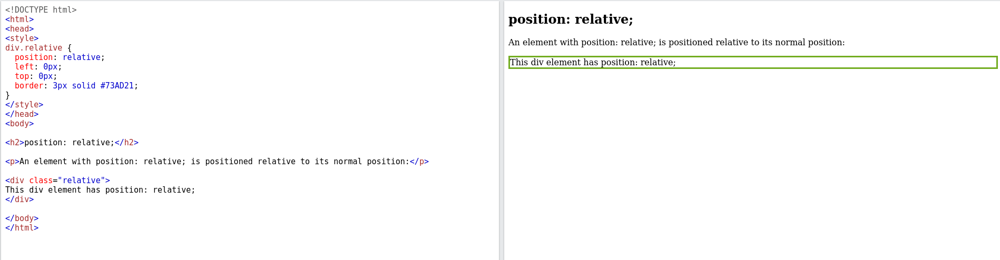
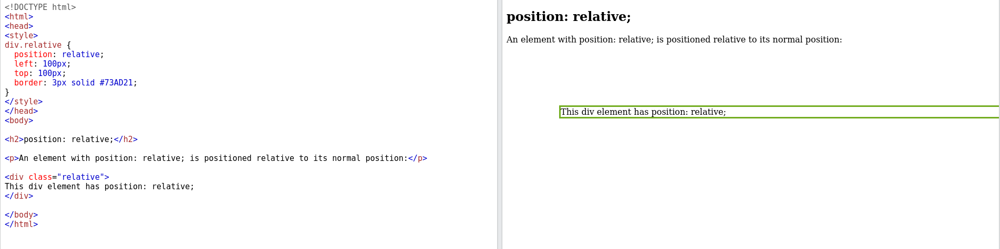
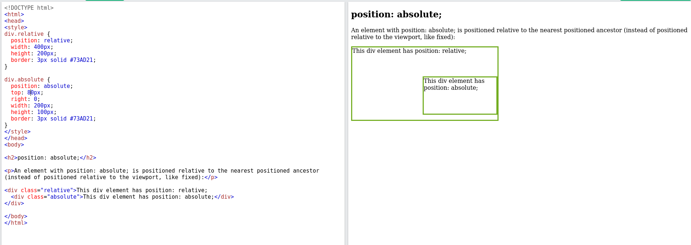
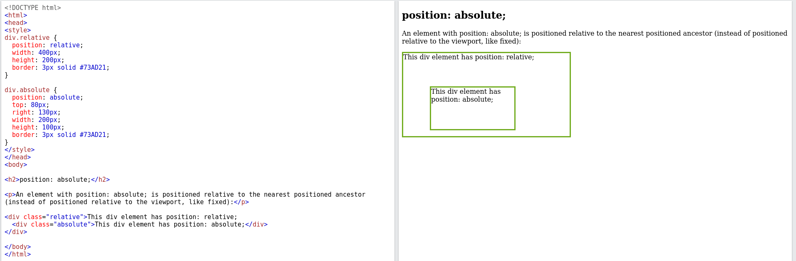
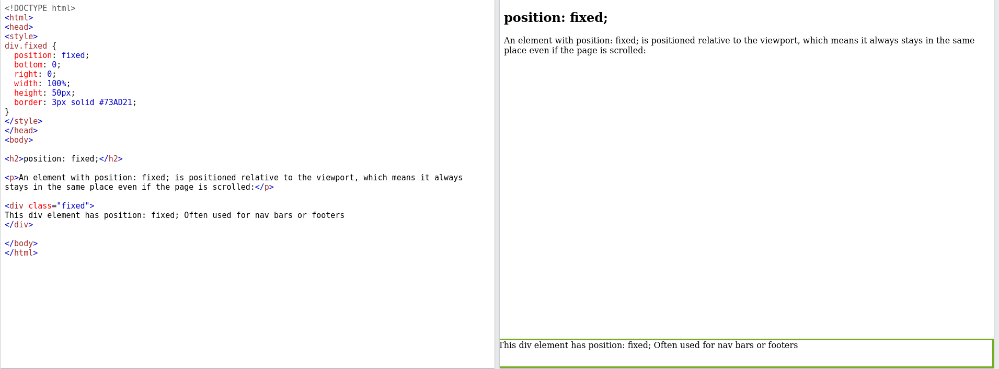

Relative position can be used to line elements
that are difficult to line up with absolute positioning
Absolute Position is very useful when placing elements independent from each other. It can need some thought because it can disrupt the flow of the site
Fixed Position is really great for when you need something to stick to the top or bottom of the page regardless of scrolling
such as a nav or a footer
Top: 100px;
 Right: 140px;
 Bottom: 0;
